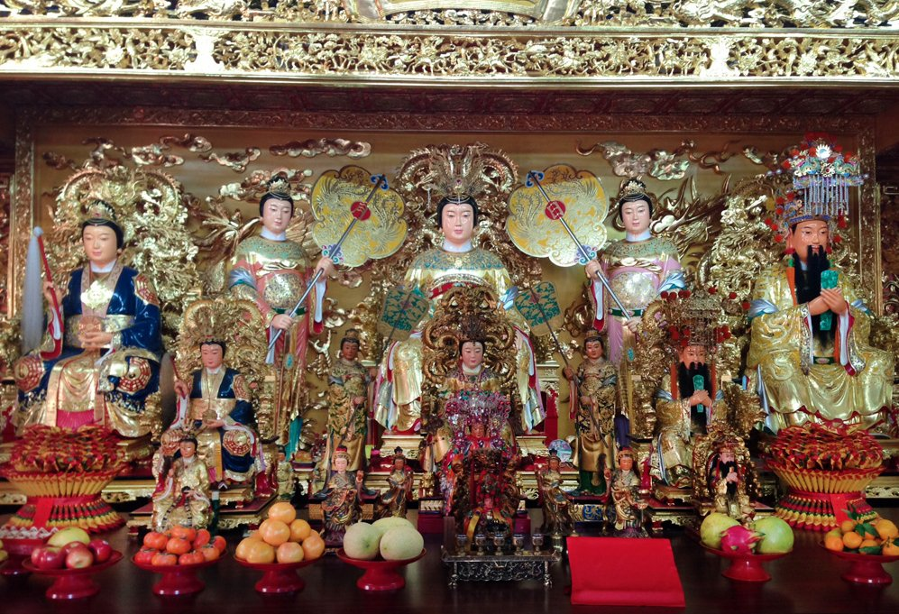

大殿Main Hall

本堂大殿間隔三才，中為無極聖殿，奉祀主神 無極瑤池大聖西王金母大天尊，飽滿豐實，眉慈目秀，神韻儼然，相貌慈祥，全身瀝粉貼金，在燈光映燦下，烘托出無窮的神感寶光，金母高居俯下，猶如一輪明月普照萬物生靈，時刻關心來此朝拜善信的吉凶命運，庇佑信眾平安，廣度有緣；右邊奉祀，玄穹高上帝玉皇赦罪賜福大天尊；左邊奉祀，無上虛空地母無量慈尊大慈尊。
殿內另奉天上聖母（媽祖）、地藏王菩薩、觀世音菩薩、濟公活佛等諸佛仙真，以鎮殿濟世，化育群黎。
At the center the principal deity, the Golden Mother of the Jasper Pool, is enshrined; to the right is the Jade Emperor and to the left the Earth Mother. Mazu (Holy Mother of Heaven), Ksitigarbha Bodhisattva, Guanyin and Ji Gong are also enshrined in the hall.
主祀Main deities
- 無極瑤池金母Golden Mother of the Jasper Pool
- 地母娘娘Earth Mother
- 玉皇大帝Jade Emperor
殿內另奉Also enshrined
- 天上聖母（媽祖）Mazu, Holy Mother of Heaven
- 地藏王菩薩Ksitigarbha Bodhisattva
- 觀世音菩薩Guanyin
- 濟公活佛Ji Gong